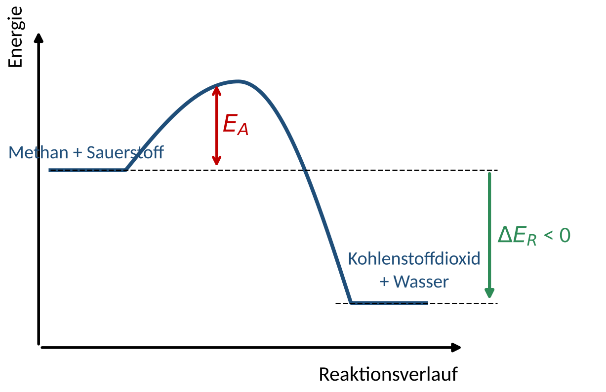

So nutzen Sie die Hilfen: Versuchen Sie es erst allein. Öffnen Sie dann Hilfe 1, danach Hilfe 2. Die Lösung dient zur Kontrolle – vergleichen Sie sie mit Ihrer eigenen Antwort und verbessern Sie diese.
Aufgabe 1: Homologe Reihe der Alkane
Vervollständigen Sie die Tabelle! Zeichnen Sie die Strukturformeln von Butan und Pentan!
Hilfe 1
Von einem Alkan zum nächsten kommt immer eine CH₂-Gruppe dazu: CH₄ → C₂H₆ → C₃H₈ … Die Namen ab C5 kommen von griechischen Zahlwörtern: penta (5), hexa (6), hepta (7), octa (8), nona (9), deca (10).
Hilfe 2
Strukturformel: C-Atome als Kette nebeneinander, jedes C-Atom hat vier Bindungsstriche. Die äußeren C-Atome tragen drei H-Atome, die inneren zwei. Alle H-Atome einzeichnen!
Zeichnen Sie ein vollständig beschriftetes Energiediagramm für die Verbrennung von Methan!
Hilfe 1
Achsen: senkrecht „Energie“ (ausschreiben!), waagrecht „Reaktionsverlauf“. Links die Edukte, rechts die Produkte.
Hilfe 2
Exotherm heißt: Die Produkte liegen energetisch tiefer als die Edukte. Dazwischen ein „Berg“ – die Aktivierungsenergie EA (vom Edukt-Niveau bis zum Gipfel). ΔER ist der Abstand Edukte → Produkte (Pfeil nach unten).
Lösung (erst nach eigenem Versuch öffnen!)

Aufgabe 6: Vollständige und unvollständige Verbrennung von Butan
Formulieren Sie die Summenformelgleichungen!
Hilfe 1
Butan: C₄H₁₀. Produkte: a) CO₂ + H₂O, b) CO + H₂O, c) C + H₂O.
Hilfe 2
So gleichen Sie aus: 1. C-Atome (Kohlenstoffdioxid), 2. H-Atome (Wasser), 3. zuletzt O-Atome (Sauerstoff). Bei einem halben Sauerstoff-Molekül (z. B. 6½ O₂) alle Koeffizienten verdoppeln. Bei a) erhalten Sie 6½ O₂ – also alles verdoppeln.
Lösung (erst nach eigenem Versuch öffnen!)
a) 2 C₄H₁₀ + 13 O₂ → 8 CO₂ + 10 H₂O ; ΔER < 0 b) 2 C₄H₁₀ + 9 O₂ → 8 CO + 10 H₂O ; ΔER < 0 c) 2 C₄H₁₀ + 5 O₂ → 8 C + 10 H₂O ; ΔER < 0
Aufgabe 7 (★ Wahl): Verbrennung von Octan
Formulieren Sie die Summenformelgleichung und berechnen Sie den Sauerstoffbedarf pro Octan-Molekül!
Hilfe 1
8 C → 8 CO₂ (16 O-Atome); 18 H → 9 H₂O (9 O-Atome); zusammen 25 O-Atome → 12½ O₂.
Hilfe 2
Verdoppeln: 2 C₈H₁₈ + 25 O₂ → … Für ein Molekül Octan teilen Sie 25 durch 2.